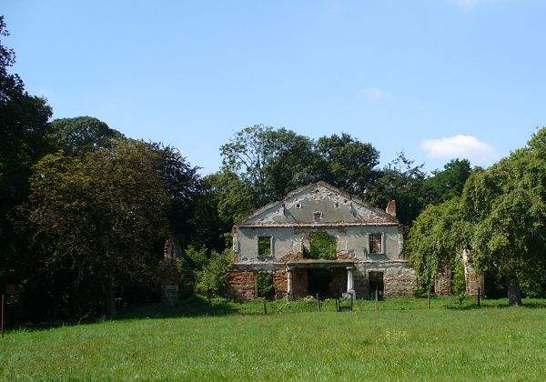

8. Zasów - oaza patriotyzmu. . Kilka lat temu w jednym z telewizyjnych programów społeczno-gospodarczych usłyszałem takie określenie niezmiernie pozytywnej roli jaką odegrały środowiska szlacheckie m.inn. w okresie okupacji. W tamtych latach niewyobrażalnej degradacji wszelkich zasad moralnych i zwątpienia w możliwość normalnej egzystencji w przyszłości, właśnie dwory szlacheckie, szczególnie na prowincji, stały się centrami gdzie pielęgnowano najlepsze cechy narodowe. Tu skupiała się inteligencja i patrioci, gotowi do walki o przetrwanie Narodu. Taką oazą patriotyzmu był z pewnością dom rodzinny Łubieńskich w Zasowie (gmina Żyraków w pow. dębickim). Przytoczę skrócony opis tej posiadłości zawarty w książce Konstantego Łubieńskiego (1910-1977), wydanej w 1976 roku p.t. "Kartki z wojny".
"Na początku XXw był to duży majątek o obszarze 5000 morgów. Na skutek spłat rodzinnych, szerokiej działalności społecznej hr Tadeusza seniora oraz zniszczeń w I Wojnie Światowej, obszar ten zmalał do 180 ha. Pałac, a właściwie duży dom, pierwotnie renesansowy z nadbudowanym piętrem na przełomie XIX/XX wieku, jest położony na ostatnim wzgórzu podkarpackim w kierunku Wisły. Otoczony parkiem o pow. powyżej 20 ha, wspaniale wówczas utrzymanym, przechodził w szkółki drzew owocowych, sady oraz pola róż. W okresie międzywojennym był to największy w Małopolsce zakład tego rodzaju upraw, dorównujący najlepszym w Europie. Faktycznym gospodarzem majątku był Alfred Łubieński, absolwent wydz. rolnego Uniwersytetu Jagiellońskiego, autentyczny specjalista i praktyk sztuki sadowniczej. Przed wybuchem II Wojny Światowej był to majątek w stanie rozkwitu".
Liczna rodzina Łubieńskich (5. synów i 2. córki) wychowywana była w duchu sienkiewiczowskiego patriotyzmu, wielkiego umiłowania Ojczyzny i szacunku dla wszystkich ludzi. Wszyscy, bez wyjątku, poświęcili swoje życie Polsce Niepodległej. Podczas okupacji tu, w ówczesnym Zassowie (gm. Straszęcin) mieściło się centrum organizacyjne walki podziemnej powiatów dębickiego i mieleckiego. Konstanty Łubieński (porucznik 2. pułku strzelców konnych), "Zbigniew" był inspektorem WSOP (Wojskowej Służby Ochrony Powstania) dębickiego Obwodu AK, a od maja 1944 roku był komendantem mieleckiego Obwodu AK. Alfred Łubieński (pośm. ppor. AK), "Iwo" organizował Placówkę AK "Zapalnik" na terenie gminy Straszęcin, wykonywał szereg zadań specjalnych w dębickim Obwodzie AK. Podczas Akcji "Burza" był zastępcą dowódcy III Zgrupowania AK (rejon Pilzna). Był znany, ceniony i lubiany przez wszystkich mieszkańców okolicznych wiosek. Jako doskonały organizator potrafił zmobilizować i przekonać do udziału w walce z okupantem całe wioski. Takim fenomenem była np. Jastrząbka Stara.
